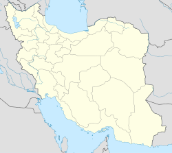

Ameri or Amri (Persian: عامري) may refer to : AMERI family name AL -AMER go back to 4000 years back when and duration of Prophet Nooh , Nooh Ibn one the greatest Arab origin ,and they are In Saudi Arabia ,Iraq ,Bahrain, Iran , and Europe and America ,
Read More
Ameri (Persian: عامري, also Romanized as ‘Āmerī, Āmerī, and Amri)[1] is a village in Howmeh Rural District, in the Central District of Deylam County, Bushehr Province, Iran. At the 2006 census, its population was 1,580, in 316 families.[2]

Ameri generation